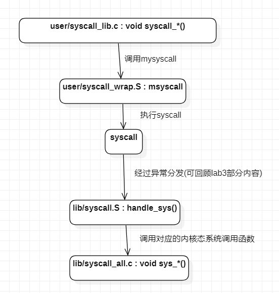

引言
一起进一步学习进程调度
- 规则多：CP0协处理器、MIPS调用规范、汇编语法
- 流程复杂：系统调用函数、页处理函数、fork函数
- 细节多：栈的切换
实验目的
- 掌握系统调用的概念及流程
- 实现进程间通讯机制
- 实现 fork 函数
- 掌握页写入异常的处理流程
操作系统设计了一系列内核空间 中的函数，当用户进程需要进行这些操作时，会引发特定的异常以陷入内核态，由内核调用对应的函数，从而安全地为用户进程提供受限的系统级操作， 我们把这种机制称为系统调用。
我们需要实现上述的系统调用机制，并在此基础上实现进程间通信（IPC）机制和一个重要的进程创建机制 fork。 在fork部分的实验中，我们会介绍一种被称为写时复制（COW）的特性，以及与其相关的页写入异常处理。
用户态和内核态
概念区分：
用户态和内核态（也称用户模式和内核模式）： 它们是 CPU 运行的两种状态。根据 lab3 的说明，在 MOS 操作系统实验使用的仿真 R3000 CPU 中，该状态由 CP0 SR 寄存器中 KUc 位的值标志。
用户空间和内核空间：MOS 中的用户空间包括 kuseg， 而内核空间主要包括 kseg0 和 kseg1。每个进程的用户空间通常通过页表映射到不同的物理页，而内核空间则直接映射到固定的物理页以及外部硬件设备。 CPU 在内核态下可以访问任何内存区域，对物理内存等硬件设备有完整的控制权，而在用户态下则只能访问用户空间。
- 用户进程和内核：进程和内核并不是对立的存在，可以认为内核是存在于所有进程地址空间中的一段代码。
lab3 使用的进程仍在内核态运行，程序可以在不使用系统调用的情况下，直接读写内核空间的硬件地址，从而向控制台输出文本。 为了让进程被调度后严格在用户态下运行，我们需要修改进程控制块中保存的 SR 寄存器的初始状态。 结合 env_pop_tf 函数的实现，我们知道内核开始调度一个进程时，首先恢复其进程上下文， 然后使用 rfe 指令进入用户态，因此我们不能直接设置 KUc 位的值。
Note：user文件夹是用户态下的，lib是内核态。
Exercise 4.0
修改env_alloc，使得env_tf.cp0_status 的值为 0x1000100c
修改之前为0x10001004 即为 0x1 0000 0000 0000 0001 0000 0000 0100
0x1000100c 即为 0x1 0000 0000 0000 0001 0000 0000 1100
此修改后经过rfe，SR寄存器的KUc位会变为1，在gxemul的定义中，此时会进入用户态
一探到底
内核将自己所能够提供的服务以系统调用的方式提供给用户空间，以供用户程序完成一些特殊的系统级操作。
系统调用机制的实现

在用户空间的程序中，我们定义了许多的函数，以writef函数为例，这一函数实际上并不是最接近内核的函数，它最后会调用一个名为syscall_putchar 的函数，这个函数在user/syscall_lib.c中。
实际上，在我们的MOS操作系统实验中，这些syscall_*的函数与内核中的系统调用函数（sys_*的函数）是一一对应的： syscall_*的函数是我们在用户空间中最接近内核的也是最原子的函数，而sys_*的函数是内核中系统调用的具体实现部分。
syscall_*的函数的实现中，它们毫无例外都调用了msyscall函数，而且函数的第一个参数都是一个与调用名相似的宏（如SYS_putchar）， 在我们的MOS操作系统实验中把这个参数称为系统调用号（include/unistd.h）
1 |
将参数从用户态传入内核态：

前四个参数会存入寄存器，在栈上预留空间，但5-6参数仅在栈上存储
Exercise 4.1
填写user/syscall.wrap.S中的msyscall函数
我们需要编写用户空间中的 msyscall 函数，这个叶函数没有局部变量，也就是说这个函数不需要分配栈帧，我们只需要执行自陷指令 syscall 来陷入内核态并保证处理结束后函数能正常返回即可。请注意不要将 syscall 指令置于跳转指令的延迟槽中，这可以简化内核中的后续处理。
1 | LEAF(msyscall) |
在通过 syscall 指令陷入内核态后，处理器将PC寄存器指向一个内核中固定的异常处理入口。在初始化异常向量表时，trap_init 函数将系统调用这一异常类型的处理入口设置为 handle_sys 函数，我们需要在lib/syscall.S中实现该函数。
需要注意的是，陷入内核态的操作并不是从一个函数跳转到了另一个函数，此处的栈指针sp是内核空间的栈指针，系统从用户态切换到内核态后，内核首先需要将原用户进程的运行现场保存到内核空间（其保存的结构与结构体struct Trapframe等同，请寻找完成这部分功能的代码实现（SAVE_ALL）），栈指针指向这个结构体的起始位置， 因此我们正是借助这个保存的结构体来获取用户态中传递过来的值（例如：用户态下$a0寄存器的值保存在了当前栈下的TF_REG4(sp)处）。

可以参照include/trap.h的宏，使用lw指令取得保存现场的一些寄存器的值。

Thinking 4.1
答：
- 内核在保存现场的时候是如何避免破坏通用寄存器的？
内核保存现场的第一步会调用SAVE_ALL，其功能为将所有通用寄存器压入内核空间的栈中，进而保证了在后续步骤不会破坏通用寄存器。
- 系统陷入内核调用后可以直接从当时的$a0-$a3参数寄存器中得到用户调用msyscall留下的信息吗？
可以，因为msyscall函数调用时，寄存器$a0-$a3用于存放前四个参数。执行syscall并没有改变这四个寄存器。但是在内核态下，之后可能这四个寄存器会被操作为其他值，故 再次需要这四个函数参数时需从栈sp按相应偏移量取出这四个寄存器的值。
- 我们是怎么做到让sys开头的函数“认为”我们提供了和用户调用msyscall时同样的参数的？
将所有msyscall的参数压入栈中，之后调用时出栈，保证了参数的一致性。
- 内核处理系统调用的过程对Trapframe做了哪些更改？这种修改对应的用户态的变化是？
将Trapframe的EPC寄存器的值加4，使得用户态的程序计数器指向陷入异常指令的下一条指令。
Exercise 4.2
完成handle_sys函数，使内核部分的系统调用机制可以正常工作
从16：18开始尝试完成handle_sys
作用：将传入的参数安置到合适的位置，然后调用对应的内核处理函数
1.内核首先需要将原用户进程的运行现场保存到内核空间：猜测是由SAVE_ALL宏实现的
SAVE_ALL究竟干了什么？它把运行现场存成了什么样子？又如何设置了sp？
定义在include/stackframe.h中
查阅get_sp，此处应该将sp设置为了KERNEL_SP（系统调用，在内核空间），然后开始了具体的存储：
①将原始的sp存到TF_REG29(sp)
②将$2存到TF_REG2(sp)
③将CP0_STATUS（SR寄存器）、CP0_CAUSE（CAUSE寄存器）、CP0_EPC（epc寄存器）、CP0_BADVADDR（BADVADDR）存储到TF_STATUS、TF_CAUSE、TF_EPC、TF_BADVADDR(sp)
④将hi、lo寄存器存储到TF_HI(sp)、TF_LO(sp)
⑤将 $0 - $31通用寄存器存入 TF_REGx(sp) TF_REG0的值为0
2.将trapframe的EPC寄存器取出，计算一个合理的值存回trapframe
此时trapframe指的是内核栈空间的一个trapframe大小的存储空间
1 | lw t0, TF_EPC(sp) |
3.将系统调用号复制入寄存器a0
思考：msycall的第一个参数就是系统调用号
1 | lw a0, TF_REG4(sp) |
4.在当前栈指针分配6个参数的存储空间，并将6个参数安置到期望的位置
sp从偏移量为0的位置开始存储
前4个参数在寄存器中存储有，a0-a3，按照C语言特性，应该先压最后一个参数。
1 | lw a0, TF_REG4(sp) |
5.第4步之后跳转到异常处理函数，之后回复栈指针到达分配前的状态
1 | addiu sp, sp, 24 |
6.增加内核系统调用入口地址？好像不需要这一步
1 | .word |
_16:41梳理完成handle_sys
涉及系统调用的文件：
- lib/syscall.S（定义了handle_sys和sys_call_table）
- include/unistd.h（定义了系统调用号）
- lib/syscall_all.c（定义了各种内核态下的系统调用函数）
- user/syscall_lib.c（定义了各种用户态下的系统调用函数）
1 | FEXPORT(ret_from_exception) |
当合成某些地址格式时（特别是在存储时），汇编器若要一个临时的寄存器用来演算，会直接使用at，在那些隐含使用寄存器会有影响的代码（例如，在尚未保存中断前所有寄存器值的中断处理程序中），需要特别注意使用一条.set noat防止隐含使用at
.set noreorder：告诉汇编器在下一次碰到.set reorder之前停止重新排序
1：是数字标号，用“1f(forward)”来引用下一个1，用“1b(backforward)”来引用上一个1.
恢复栈指针，跳转到epc对应的指令位置
基础系统调用函数
Exercise 4.3
实现int sys_mem_alloc(int sysno,u_int envid, u_int va, u_int perm)函数
主要功能是分配内存
内核通过什么来确定发出请求的进程是哪一个？ 又是如何完成分配与映射页面的？
1 | /* Overview: |
checkperm置1，表示该函数只用于当前进程或当前进程的子进程
Exercise 4.4
实现int sys_mem_map(int sysno,u_int srcid, u_int srcva, u_int dstid, u_int dstva, u_int perm)
将原进程地址空间中的相应内存映射到目标进程的相应地址空间的相应虚拟内存中去
1 | /* Overview: |
Exercise 4.5
实现int sys_mem_unmap(int sysno,u_int envid, u_int va)函数
解除某个进程地址空间 虚拟内存和物理内存之间的映射关系
1 | /* Overview: |
Exercise 4.6
实现void sys_yield(void)函数
实现用户进程对CPU的放弃， 从而调度其他的进程
1 | /* Overview: |
至此，我们能够进一步理解，进程与内核间的关系并非对立： 在内核处理进程发起的系统调用时，我们并没有切换 CPU 的地址空间（页目录地址），也不需要将进程上下文（Trapframe）保存到进程控制块中，只是切换到内核态下， 执行了一些内核代码。可以说，处理系统调用时的内核仍然是代表当前进程的，这也是系统调用等中断与时钟中断的本质区别， 也是我们引入 KERNEL_SP 和 TIMESTACK 两种机制来保存进程上下文的一个原因。你也可以结合这一点， 理解内核中 ret_from_exception 和 env_pop_tf 这两个用于返回用户态的汇编函数间的区别。
进程上下文来源不同：env_pop_tf是从进程控制块PCB中的env_tf恢复进程上下文（env_tf总是在旧进程即将被挂起时从TIMESTACK中复制而来）；ret_from_exception是从KERNEL_SP栈中的tf恢复进程上下文，这体现出系统调用和时钟中断的本质区别：系统调用处理的是进程和内核之间的非对立关系，而时钟中断处理的是进程和进程之间的对立关系。
TIMESTACK和KERNEL_SP的区别
env_pop_tf是什么作用？从时钟中断回到用户态
ret_from_exception是什么作用？从系统调用回到用户态
进程间通信机制（IPC）
- IPC的目的是使两个进程之间可以通讯
- IPC需要通过系统调用来实现
- IPC还与进程的数据、页面等信息有关
进程通信的问题在于各个进程的地址空间是相互独立的，我们要想办法把一个地址空间中的东西传给另一个地址空间
所有进程都共享了内核所在的2G空间，想要在不同空间之间交换数据，我们就可以借助于内核的空间来实现。
在进程控制块中我们看到了我们想要的内容：
| env_ipc_value | 进程传递的具体数值 |
|---|---|
| env_ipc_from | 发送方的进程ID |
| env_ipc_recving | 1：等待接受数据中；0：不可接受数据 |
| env_ipc_dstva | 接收到的页面需要与自身的哪个虚拟页面完成映射 |
| env_ipc_perm | 传递的页面的权限位设置 |
Exercise 4.7
实现void sys_ipc_recv(int sysno,u_int dstva)函数和 int sys_ipc_can_send(int sysno,u_int envid, u_int value, u_int srcva, u_int perm)函数
sys_ipc_recv(int sysno,u_int dstva)函数用于接受消息。在该函数中：
- 首先要将自身的env_ipc_recving设置为1，表明该进程准备接受发送方的消息
- 之后给env_ipc_dstva赋值，表明自己要将接受到的页面与dstva完成映射
- 阻塞当前进程，即把当前进程的状态置为不可运行（ENV_NOT_RUNNABLE）
- 最后放弃CPU（调用相关函数重新进行调度），安心等待发送方将数据发送过来
sys_ipc_can_send(int sysno, u_int envid, u_int value, u_int srcva, u_int perm)函数用于发送消息：
- 根据envid找到相应进程，如果指定进程为可接收状态(考虑env_ipc_recving)，则发送成功
- 否则，函数返回-E_IPC_NOT_RECV，表示目标进程未处于接受状态
- 清除接收进程的接收状态，将相应数据填入进程控制块，传递物理页面的映射关系
- 修改进程控制块中的进程状态，使接受数据的进程可继续运行(ENV_RUNNABLE)
值得一提的是，由于在我们的用户程序中，会大量使用srcva为0的调用来表示只传value值，而不需要传递物理页面， 换句话说，当srcva不为0时，我们才建立两个进程的页面映射关系。因此在编写相关函数时也需要注意此种情况
1 | /* Overview: |
1 | /* Overview: |
当srcva不为0时，需要先找到原物理页面，再建立新映射，也可以调用sys_mem_map
Thinking 4.2
思考下面的问题，并对这个问题谈谈你的理解： 请回顾 lib/env.c 文件中 mkenvid() 函数的实现，该函数不会返回 0，请结合系统调用和 IPC 部分的实现 与 envid2env() 函数的行为进行解释。
答：
1 | u_int mkenvid(struct Env *e) { |
在系统调用和IPC部分的实现中多次调用了envid2env()，其效果是如果envid为零，就返回当前进程作为结果，否则返回合适的进程指针。因此要保证没有进程的envid为0，故makenvid()需要如此实现。
debug:env_run()
初窥fork
一个进程在调用 fork() 函数后，将从此分叉成为两个进程运行，其中新产生的进程称为原进程的子进程。在新的进程中，这一 fork() 调用的返回值为 0，而在旧进程，也就是所谓的父进程中，同一调用的返回值是子进程的进程 ID（MOS 中的 env_id），且一定大于 0。 fork 在父子进程中产生不同返回值这一特性，让我们能够在代码中调用 fork 后判断当前在父进程还是子进程中，以执行不同的后续逻辑，也使父进程能够与子进程进行通信。
与 fork 经常“纠缠不清”的， 是名为 exec 的一系列系统调用。它会使进程抛弃现有的“一切”，另起炉灶执行新的程序。若在进程中调用 exec， 进程的地址空间（以及在内存中持有的所有数据）都将被重置，新程序的二进制镜像将被加载到其代码段，从而让一个从头运行的全新进程取而代之，就像太乙真人用莲藕 为哪吒重塑了一个肉身一样。fork 的一种常见应用就被称作 fork-exec，指在 fork 出的子进程中调用 exec，从而在创建出的新进程中运行另一个程序。
fork_test.c:
1 |
|
1 | Before fork, var = 1. |
- 只有父进程会执行 fork 之前的代码段。
- 父子进程同时开始执行 fork 之后的代码段。
- fork 在不同的进程中返回值不一样，在子进程中返回值为 0，在父进程中返回值不为 0，而为子进程的 pid（Linux 中进程专属的 id，类似于 MOS 中的 envid）。
- 父进程和子进程虽然很多信息相同，但他们的进程控制块是不同的。
子进程实际上就是按父进程的代码段等内存数据，以及进程上下文等状态作为模板而雕琢出来的。 但即使如此，父子进程也还是有很多不同的地方
Thinking 4.3
子进程完全按照 fork() 之后父进程的代码执行，说明了什么？
但是子进程却没有执行 fork() 之前父进程的代码，又说明了什么？
答：子进程的意义是以父进程的相同状态执行fork()后不同的分支语句，完全按照fork()后的父进程代码执行说明子进程和父进程有相同的代码段，不执行fork()前的代码说明子进程和父进程的上下文环境完全相同，在fork之后执行fork()的下一条指令。
Thinking 4.4
fork 函数的两个返回值，下面说法正确的是：
A、fork 在父进程中被调用两次，产生两个返回值
B、fork 在两个进程中分别被调用一次，产生两个不同的返回值
C、fork 只在父进程中被调用了一次，在两个进程中各产生一个返回值
D、fork 只在子进程中被调用了一次，在两个进程中各产生一个返回值
答：C
涉及的函数：

写时复制机制
父子进程共享物理内存是有前提条件的：共享的物理内存不会被任一进程修改。那么，对于那些父进程或子进程修改的内存我们又该如何处理呢？ 这里我们引入一个新的概念——写时复制（Copy On Write，简称 COW)。COW 类似于一种对虚拟页的保护机制，通俗来讲就是在 fork 后的父子进程中有修改内存（一般是数据段或栈）的行为发生时，内核会捕获到一种页写入异常，并在异常处理时为修改内存的进程的地址空间中相应地址分配新的物理页面。
一般来说，子进程的代码段仍会共享父进程的物理空间，两者的程序镜像也完全相同。
在我们的 MOS 操作系统实验中，进程调用 fork 时，其所有的可写入的内存页面，都需要通过设置页表项标志位 PTE_COW 的方式被保护起来。 无论父进程还是子进程何时试图写一个被保护的页面，都会产生一个页写入异常，而在其处理函数中，操作系统会进行写时复制，把该页面重新映射到一个新分配的物理页中，并将原物理页中的内容复制过来，同时取消虚拟页的这一标志位。
返回值的秘密
Exercise 4.8
1 | /* Overview: |
- 需要创建一个进程
调用env_alloc
- 保存运行现场
要复制一份当前进程的运行现场（进程上下文）Trapframe 到子进程的进程控制块中。
当前进程的运行现场已被存入KERNEL_SP中，此步将其复制到子进程控制块中
- 程序计数器
子进程的现场中的程序计数器（PC）应该被设置为从内核态返回后的地址，也就是使它陷入异常的 syscall 指令的后一条指令的地址。由于我们之前完成的任务，这个值已经保存于 Trapframe 中。
之前在handle_sys.S中，将EPC+4并存入了Trapframe中
1 | e -> env_tf.pc = e -> env_tf.cp0_epc; |
- 返回值有关
这个系统调用本身是需要一个返回值的，我们希望系统调用在内核态返回的 envid 只传递给父进程，对于子进程则需要对它的保存的现场Trapframe进行一个修改，从而在恢复现场时用 0 覆盖系统调用原来的返回值。
将 e->env_tf.regs[2] = 0
2号寄存器是v0，也就是子进程的返回值，设为0
- 进程状态
我们当然不能让子进程在父进程的syscall_env_alloc返回后就直接被调度，因为这时候它还没有做好充分的准备，所以我们需要避免它被加入调度队列。
e->env_status = ENV_NOT_RUNNABLE;
- 其他信息
观察Env结构体的结构，思考下还有哪些字段需要进行初始化，这些字段的初始值应该是继承自父进程还是使用新的值，如果这些字段没有初始化会有什么后果（提示：env_pri）。
env_pri继承父进程的。
父子各自的旅途
在 user/libos.c 的实现中，用户程序在运行时入口会将一个用户空间中的指针变量 struct Env *env 指向当前进程的控制块。对于 fork 后的子进程，它具有了一个与父亲不同的进程控制块，因此在子进程第一次被调度的时候（当然这时还是在fork函数中）需要对 env 指针进行更新，使其仍指向当前进程的控制块。这一更新过程与运行时入口对 env 指针的初始化过程相同，具体步骤如下：
- 通过一个系统调用来取得自己的envid，因为对于子进程而言
syscall_env_alloc返回的是一个0值。 - 根据获得的envid，计算对应的进程控制块的下标，将对应的进程控制块的指针赋给 env。
1 | // user/libos.c |
Exercise 4.9
1 | //get a new envid |
1 | /* Overview: |
父进程在子进程醒来之前还需要做更多的准备，这些准备中最重要的一步是将父进程地址空间中需要与子进程共享的页面映射给子进程，这需要我们遍历父进程的大部分用户空间页，并使用将要实现的 duppage 函数来完成这一过程。duppage 时，对于可以写入的页面的页表项，在父进程和子进程都需要加以PTE_COW标志位保护起来。
Thinking 4.5
我们并不应该对所有的用户空间页都使用duppage进行映射。那么究竟哪些用户空间页应该映射，哪些不应该呢？ 请结合本章的后续描述、mm/pmap.c 中 mips_vm_init 函数进行的页面映射以及 include/mmu.h 里的内存布局图进行思考。
答：应该对UTEXT到USTACKTOP之间的页面进行映射，向上是异常处理栈和无效区，父子进程并不共享，无需映射，再往上是UTOP以上的区域，在 env_setup_vm时已经完成了映射，无需再次映射。
Thinking 4.6
在遍历地址空间存取页表项时你需要使用到vpd和vpt这两个“指针的指针”，请参考 user/entry.S 和 include/mmu.h 中的相关实现，思考并回答这几个问题：
- vpt和vpd的作用是什么？怎样使用它们？
1 | vpt[0] = *vpt = UVPT = 0x7fc00000， vpd[0] = *vpd = 0x7fdff000 |
vpt存储的是页表的起始地址，vpd存储的是页目录的起始地址（存储自映射）。
答：作用是在用户态时能方便访问用户空间的页目录和页表项。使用时先( vpt)，得到对应基址，接着加偏移并访存得到对应得页表项( vpt)[x]。
- 从实现的角度谈一下为什么进程能够通过这种方式来存取自身的页表？
答：在用户态，vpt = UVPT，即为用户页表的基址，可以利用已经建立的自映射机制，利用 vpt加对应偏移访问需要的页表项。
- 它们是如何体现自映射设计的？
答：二者在entry.S中定义：
1 | .globl vpt |
从中可以看出，二者的关系满足自映射的特点。
- 进程能够通过这种方式来修改自己的页表项吗？
答：不能，用户态不能修改页表项，因为在创建进程时，env_setup_vm函数设定了用户对自身页表项只有读的权限。
1 | e->env_pgdir[PDX(UVPT)] = e->env_cr3 | PTE_V;//read-only |
在duppage函数中，唯一需要强调的一点是，要对具有不同权限位的页使用不同的方式进行处理。你可能会遇到这几种情况：
只读页面
对于不具有 PTE_R 权限位的页面，按照相同权限（只读）映射给子进程即可。
写时复制页面
即具有 PTE_COW 权限位的页面。这类页面是之前的 fork 时
duppage的结果，且在本次 fork 前必然未被写入过。共享页面
即具有 PTE_LIBRARY 权限位的页面。这类页面需要保持共享可写的状态，即在父子进程中映射到相同的物理页，使对其进行修改的结果相互可见。在文件系统部分的实验中，我们会使用到这样的页面。
可写页面
即具有 PTE_R 权限位，且不符合以上特殊情况的页面。这类页面需要在父进程和子进程的页表项中都使用 PTE_COW 权限位进行保护。
Exercise 4.10
参考一下entry.S
考虑调用
int sys_mem_map(int sysno, u_int srcid, u_int srcva, u_int dstid, u_int dstva, u_int perm)继续寻找vpt和vpd
- 定义在../include/mmu.h中
1 | extern volatile Pte* vpt[];//指针数组 |
- 其值在entry.S中
1 | .globl vpt |
故：
1 | vpt[0] = *vpt = UVPT = 0x7fc00000， vpd[0] = *vpd = 0x7fdff000 |
vpt存储的是页表的起始地址，vpd存储的是页目录的起始地址（存储自映射）
1 | e->env_pgdir[PDX(UVPT)] = e->env_cr3 | PTE_V;//read-only |
如果我们想要获取地址va的页表项，则：
1 | (*vpt)[VPN(va)]; |
1 | for (i = 0; i < VPN(USATCKTOP); i++) { |
1 | /* Overview: |
页写入异常
写时复制（COW）特性同样依赖异常处理，CPU的页写入异常会在用户进程写入被标记为PTE_COW的页面时产生，为此，我们在trap_init中注册了一个处理函数handle_mod，这一函数会跳转到 lib/traps.c 的 page_fault_handler 函数
注意：页写入异常与页缺失异常不同。
MOS 操作系统的实现巧妙地利用了一个硬件保留的权限位作为 PTE_COW，并在内核进行 TLB 重填时将标记为 PTE_COW 的页表项中的 dirty bit 置零，因此用户程序在处理时可认为这种页写入异常在且仅在写入 PTE_COW 页面时产生。
关键：异常处理栈：
如果需要在用户态下完成页面复制等处理过程，是不能直接使用正常情况下的进程堆栈的（因为发生页写入异常 的也可能是正常堆栈的页面），所以用户进程就需要一个单独的堆栈来执行处理程序，我们把这个堆栈称作 异常处理栈，它的栈顶对应的是内存布局中的 UXSTACKTOP。
处理异常需要堆栈，但不能用正常的用户堆栈，需要异常处理栈。
需要做的准备：
父进程需要为自身以及子进程的异常处理栈映射物理页面。
此外，内核还需要知晓进程自身的处理函数所在地址，它的地址存在于进程控制块的
env_pgfault_handler域中，这个地址 也需要事先由父进程通过系统调用设置。
概括而言，处理页写入异常的大致流程如下：
- 用户进程触发页写入异常，跳转到
handle_mod函数，再跳转到page_fault_handler函数。 page_fault_handler函数负责将当前现场保存在异常处理栈中，并设置epc寄存器的值，使得从中断恢复后能够跳转到env_pgfault_handler域存储的异常处理函数的地址。- 退出中断，跳转到异常处理函数中，这个函数首先跳转到
pgfault函数（定义在fork.c中）进行写时复制处理，之后恢复事先保存好的现场，并恢复sp寄存器的值，使得子进程恢复执行。

Exercise 4.11
完成 lib/traps.c 中的 page_fault_handler 函数，设置好异常处理栈以及epc寄存器的值，将cp0_epv指向env_pgfault_handler函数入口，env_pgfault_hadler指向的就是page_fault。
1 | void |
Thinking 4.7
page_fault_handler 函数中，你可能注意到了一个向异常处理栈复制Trapframe运行现场的过程，请思考并回答这几个问题：
- 这里实现了一个支持类似于“中断重入”的机制，而在什么时候会出现这种“中断重入”？
答：当用户程序向一个有POW位的页面尝试写时，会触发页写入异常，进入页写入异常处理函数，经过跳转会调用 pgfault函数，如果在异常处理过程中再次向一个有POW位的页面尝试写时，就会再次触发页写入异常，从而执行如下分支：
1 | if (tf->regs[29] >= (curenv->env_xstacktop - BY2PG) && |
也即所谓的中断重入。
上述分析在理论上说是正确的，但是在MOS的实现中，在进行页写入异常处理时，我们使用的栈指针是异常处理栈的指针（这一步是在page_fault_handler中断恢复时完成的），所以在异常处理过程中（即page_fault函数），所有的读写操作只涉及异常处理栈所在的页面，又由于对于父子进程而言，异常处理栈并非是共享的，不应该（理论上）有COW位，所以页写入异常不会发生。
综上，我理解的中断重入机制是为提高MOS操作系统的可扩展性设计的。
- 内核为什么需要将异常的现场Trapframe复制到用户空间？
答：因为异常处理是在用户态进行的，而用户态只能访问用户空间（低2G）内的数据，所以需要将现场保存在用户空间。
Exercise 4.12
完成 lib/syscall_all.c 中的sys_set_pgfault_handler，（系统调用），在内核态下，将pgfault设置到env结构体
1 | /* Overview: |
- 查找set_pgfault_handler（），在user/pgfault.c中，利用系统调用，设置异常处理函数
1 | // |
- 观察entry.S中的__asm_pgfault_handler函数，
1 | __asm_pgfault_handler: |
Thinking 4.8
我们大概知道了这是一个由用户程序处理并由用户程序自身来恢复运行现场的过程，请思考并回答以下几个问题：
- 在用户态处理页写入异常，相比于在内核态处理有什么优势？
答：尽量减小内核出错的可能，即使程序崩溃，系统也可以稳定工作，这一设计其实是依据微内核的设计理念。
- 从通用寄存器的用途角度讨论，在可能被中断的用户态下进行现场的恢复，要如何做到不破坏现场中的通用寄存器？
答：在用户进行异常处理之前，将通用寄存器保存在区别于用户栈的异常处理栈，执行完异常处理程序后再从异常处理栈恢复现场。
Exercise 4.13
实现真正进行处理的函数：user/fork.c 中的 pgfault 函数了，pgfault 需要完成这些任务：
- 判断页是否为 COW 的页面，是则进行下一步，否则报错
- 分配一个新的临时物理页到临时位置，将要复制的内容拷贝到刚刚分配的页中（临时页面位置可以自定义，观察mmu.h的地址分配查看哪个地址没有被用到，思考这个临时位置可以定在哪）
- 将发生页写入异常的地址映射到临时页面上，注意设定好对应的页面权限位，然后解除临时位置的内存映射
1 | /* Overview: |
Thinking 4.9
- 为什么需要将
set_pgfault_handler的调用放置在syscall_env_alloc之前？
答：子进程首先会从syscall_env_alloc中断恢复，等待自身状态设置为 env_runnable后开始执行（由于这一步是在父进程的fork函数的最后一步，所以就相当于父进程执行完了fork的所有工作，当然包括建立写时复制保护机制），此时如果 set_pgfault_handler的调用放置在syscall_env_alloc之后，子进程会再次执行一次系统调用来设置 __pgfault_handler的值，由于__pgfault_handler所在页面存在COW位，故会导致页写入异常产生。
- 如果放置在写时复制保护机制完成之后会有怎样的效果？
答：如果放置在写时复制保护机制完成之后，此时父子进程已经共享了__pgfault_handler所在的页面并且该页面有COW位，此时父进程若想要修改__pgfault_handler的值会触发页写入异常，并且最终子进程的__pgfault_handler并没有被正确赋值，这会导致页写入异常机制建立的失败。
- 子进程是否需要对在entry.S定义的字__pgfault_handler赋值？
答：不需要，因为父进程已经通过调用 set_pgfault_handler为__pgfault_handler赋过值了，子进程与父进程共享这一变量，故子进程不需要再次赋值。
Exercise 4.14
在内核中实现sys_set_env_status函 数时，不仅需要设置进程控制块的env_status域，还需要在env_status被设为RUNNABLE时将控制块加入到可调度进程的链表中。
1 | /* Overview: |
Exercise 4.15
fork中父进程在syscall_env_alloc后还需要做的事情有：
- 遍历父进程地址空间，进行duppage。
- 为子进程分配异常处理栈。
- 设置子进程的异常处理函数，确保页写入异常可以被正常处理。
- 设置子进程的运行状态
最后再将子进程的envid返回，fork函数就大功告成了！
1 | extern void __asm_pgfault_handler(void); |
实验疑难点
- user/libos.c 的实现中，用户程序在运行时入口会将一个用户空间中的指针变量
struct Env *env指向当前进程的控制块，如何理解？
答：user/user.lds指明了用户进程的入口地址为_start，lds 会把用户程序里的 _start 链接到 UTEXT
注意，entry_point就是UTEXT，值为0x400000。
- _start，用户进程初始从这里开始执行
1 | #user/entry.S 用户态 |
- libmain函数，用户进程入口的 C 语言部分，负责完成执行用户程序 umain 前后 的准备和清理工作，是我们这次需要了解的函数之一。
1 | //user/libos.c |
这里需要一个env变量的原因是有些函数需要env，如ipc.c。
- Note 4.6. 在用户态实现的fork并不是一个原子的过程，所以会出现一段时间（也就是在
duppage之前的时间） 我们没有来得及为堆栈所在的页面 设置写时复制的保护机制，在这一段时间内对堆栈的修改（比如发生了其他的函数调用），会将非叶函数syscall_env_alloc函数调用的栈帧中的返回地址覆盖。这一问题对于父进程来说是理所当然的，然而对于子进程来说，这个覆盖导致 的后果则是在从syscall_env_alloc返回时跳转到一个不可预知的位置造成panic。当然你现在看到的代码已经通过一个 优雅的办法来修补这个 bug：与其他系统调用函数不同，syscall_env_alloc是一个内联（inline）的函数，也就是说 这个函数并不会被编译为一个函数，而是直接内联展开在fork函数内。所以syscall_env_alloc的栈帧就不存在了，msyscall函数直接返回到了fork函数内，如此这个 bug 就解决了。
答：在堆栈所在页面设置PTE_COW之前，在for和if之间、duppage函数调用的过程中，可能会对堆栈进行操作，而此时由于父进程已经从syscall_env_alloc返回，故对应的调用栈帧也就销毁了，很可能其保存的函数返回地址被覆盖。因此把syscall_env_alloc函数设置成内联函数。
duppage函数为什么必须保证子进程先映射PTE_COW，之后父进程才能映射？
答：因为执行duppage时，仍处于用户态，如果先为父进程页面置PTECOW，那么如果这个页面是堆栈的话，执行之后的syscall*函数可能会改变这个堆栈产生页写入异常，进而父进程中该页面会消除PTE_COW标记，而子进程会有PTE_COW标记。

如果先给父进程加PTE_COW，然后修改了该页，该页将进行写时复制，父进程指向新的页，而新页没有被加上PTE_COW。此时再map子进程，子进程该页加上PTE_COW位而父进程没有。在随后程序运行中，若父进程进行修改，由于缺失PTE_COW，导致无法进行写时复制，因此子进程的运行出现错误（子进程该页本来不该被改，但却由于父进程被改而一起改了）。
This is copyright.